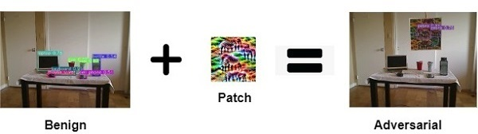

Han Wu, Syed Yunas, Sareh Rowlands, Wenjie Ruan, and Johan Wahlstrom
Adversarial Filter
Adversarial Patch
Adversarial Overlay
How different attacks apply the perturbation $\delta$ using a binary mask $m \in \{0, 1\}^{wh}$
$x^{'}_{filter} = x + \delta$ $x^{'}_{overlay} = x + m \odot \delta$ $x^{'}_{patch} = (1-m) \odot x + m \odot \delta$
Given an input image $x$, the object detection model outputs $S \times S$ candidate bounding boxes $o \in \mathcal{O}$ at three different scales.
Each candidate box $o^i$ contains $(b_x^i, b_y^i, b_w^i, b_h^i, c^i, p_1^i, p_2^i, ..., p_K^i)$ for K classes, where $0 \leq i \leq |\mathcal{O}|$.
$$\begin{aligned} \text{One-Targeted}:\ \mathcal{L}_{adv}^{1}(\mathcal{O}) &= \max_{1 \leq i \leq |\mathcal{O}|}\ [\sigma(c^i) * \sigma(p^i_t)] \\ \text{Multi-Targeted}:\ \mathcal{L}_{adv}^{2}(\mathcal{O}) &= \sum^{|\mathcal{O}|}_{i = 1}\ [\sigma(c^i) * \sigma(p^i_t)] \\ \text{Multi-Untargeted}:\ \mathcal{L}_{adv}^{3}(\mathcal{O}) &= \sum^{|\mathcal{O}|}_{i = 1} \sum_{j=1}^{K}\ [\sigma(c^i) *\sigma(p^i_j)] \end{aligned}$$
where $|\mathcal{O}| = \sum_{1 \leq i \leq 3} S_i \times S_i \times B$, and $S_i$ represents the grid size of the $i_{th}$ output layer ($S \in \{13,26,52\}$, $B=3$).